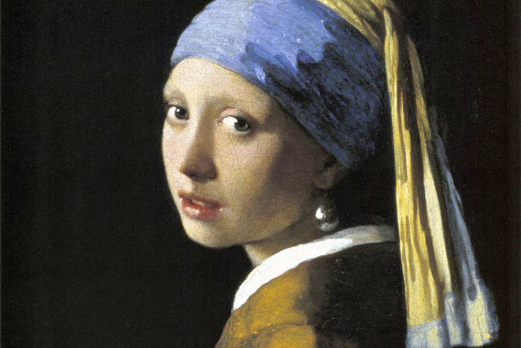

¿QUÉ VAS A ENCONTRAR AQUÍ?
Una mirada divertida al arte y la cultura del Barroco.

"Barroco a lo loco" es una videoentrevista que presenta de forma divertida y sencilla las características del Barroco, ayudando a comprender este movimiento artístico y cultural y su importancia en la historia. Además, este proyecto se ha realizado mediante trabajo cooperativo, favoreciendo la colaboración, el reparto de tareas y el intercambio de ideas entre los miembros del grupo. También ha permitido desarrollar la competencia digital a través del uso de diferentes aplicaciones y herramientas TIC para la búsqueda de información, la creación de contenidos y la edición del vídeo, combinando el aprendizaje de la Historia con el uso responsable y creativo de la tecnología.